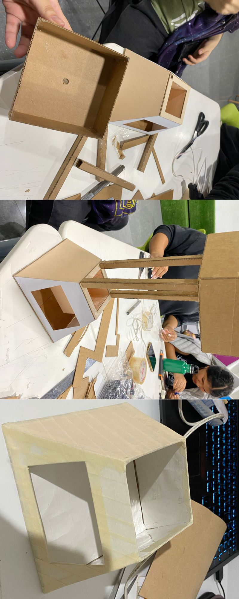

Semana 15
CLASE PRESENCIAL
Para esta clase el porfesor no puso asistir, sin embargo mando un profesor suplente que estuvo con nosotros guiandonos en lo q necesitabamos, con mis compañeros estuvimos avanzando nuestro proyecto de maceta, dias antes habiamos enviado nuestro trabajo para impresion pero hubo bastantes problemas al respecto, primero enviamos las piezas y nos dijeron que no se podia imprimir por el grosor, entonces optamos por sugerencia en hacerlo a corte laser, sin embargo al mandarlo y entregarnos las piezas n nos dieron piezas a corte laser, sino como impresión 3D, lo que nos parecio raro porque agarraron las piezas para corte que no tenian grosor para la impresion, pero no nos hicimos problema con eso y en el salon juntamos las piezas, llevamos carton, pistola con silicona, tijera y más, nos pusimos a trabajar en pegar y completas las piezas que nos fataban.